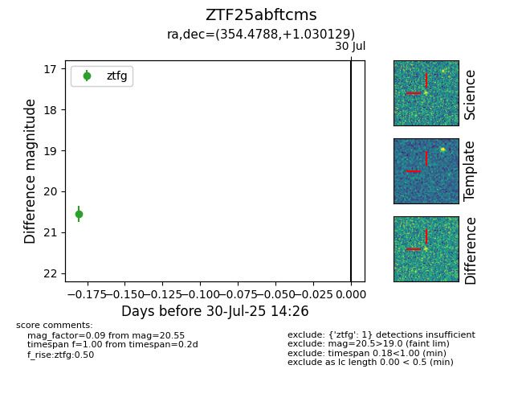

Target ZTF25abftcms at 2025-07-30 14:26, see:
FINK: fink-portal.org/ZTF25abftcms
Lasair: lasair-ztf.lsst.ac.uk/objects/ZTF25abftcms
ALeRCE: alerce.online/object/ZTF25abftcms
alt names
ZTF25abftcms (ztf,fink)
coordinates:
equatorial (ra, dec) = (354.4788,+1.03013)
galactic (l, b) = (87.8353,-56.74609)
photometry
last ztfg=20.55
1 ztfg detections
